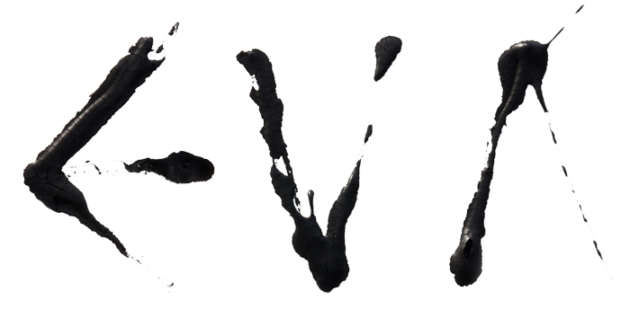

Luister
Nieuws
Over
Credits
Inschrijven

Eva is een gesproken opera en muzikaal luisterboek ineen, gebaseerd op de gelijknamige openhartige roman van Carry van Bruggen. Het werk is geproduceerd door operaregisseur Sjaron Minailo in samenwerking met schrijfster Gaea Schoeters en componiste Annelies Van Parys. De eerste aflevering verschijnt op 8 maart 2021 (Nationale Vrouwendag).
Het literaire werk Eva, dat bij het uitbrengen in 1927 veel opzien baarde en tijdens de tweede feministische golf in de jaren zeventig werd herontdekt, is nu opnieuw het symbool voor de emancipatorische beweging en vormt de basis voor deze achtdelige podcastserie. Van Bruggens stream-of-consciousness zelfportret, over de geestelijke en seksuele ontplooiing van een jonge Joodse vrouw in het conservatieve Nederland, toont de zoektocht naar een balans tussen de vrouw die haar omgeving wil dat ze is en de vrouw die ze zelf wil zijn.
De veertig minuten durende afleveringen, waarin de muzikaliteit van de door Schoeters bewerkte tekst centraal staat, worden uitgevoerd door de gerenommeerde actrices en zangeressen Claron McFadden, Helen Kamperveen, Leny Breederveld, Mira Helmer, Nastaran Razavi Khorasani, Stefanie Janssen, Funda Müjde en Jade Olieberg. Hun persoonlijke interpretaties zorgen iedere keer voor een andere auditieve ervaring bij het luisteren van de afzonderlijke podcasts. De muziekcompositie van Van Parys wordt vertolkt door het Ragazze Quartet. Het gezelschap neemt je mee de atmosferische binnenwereld van Eva in, als een wandeling in het onderbewustzijn.
Synopsys

Context programma: Aflevering 5
Context programma: Aflevering 4
Context programma: Aflevering 3
Context programma: Aflevering 2
Context programma - Aflevering 1
Context aflevering #5
In aanloop naar de lancering van EVA op 8 maart 2021 gaan toneelschrijver Gaea Schoeters en schrijver Barber van de Pol in 5 afleveringen in gesprek over het leven van Carry van Bruggen, over het boek Eva en over centrale thema’s in Van Bruggen's oeuvre.
In deze vijfde en laatste context aflevering spreken Gaea Schoeters en Barber van de Pol over Carry van Bruggen en haar waakzame houding ten aanzien van nationalisme en groepsdenken.
Context aflevering #4
In aanloop naar de lancering van EVA op 8 maart 2021 gaan toneelschrijver Gaea Schoeters en schrijver Barber van de Pol in 5 afleveringen in gesprek over het leven van Carry van Bruggen, over het boek Eva en over centrale thema’s in Van Bruggen's oeuvre.
In deze vierde aflevering spreken Gaea Schoeters en Barber van de Pol over het belang van ‘anders zijn’ in het werk van Carry van Bruggen.
Context aflevering #3
Gaea Schoeters en Barber van de Pol over het boek Eva
In aanloop naar de lancering van de gesproken opera EVA (8 maart 2021) gaan toneelschrijver Gaea Schoeters en schrijver Barber van de Pol in 5 afleveringen in gesprek over het werk en leven van Carry van Bruggen.
In deze derde aflevering vertrekken ze vanuit het thema “de denkende vrouw” en halen ze naar de voorgrond hoe het werk van Carry van Bruggen een impliciete aanklacht is tegen de achterstelling van de vrouw.
Context aflevering #2
Gaea Schoeters en Barber van de Pol over het boek Eva
In aanloop naar de lancering van de gesproken opera EVA (8 maart 2021) gaan toneelschrijver Gaea Schoeters en schrijver Barber van de Pol in 5 afleveringen in gesprek over het werk en leven van Carry van Bruggen.
In deze tweede aflevering spreken ze over het boek “Eva” dat bij het uitbrengen in 1927 veel opzien baarde en tijdens de tweede feministische golf in de jaren zeventig werd herontdekt. Het stream-of-consciousness portret, over de geestelijke en seksuele ontplooiing van een jonge Joodse vrouw in het conservatieve Nederland, toont de zoektocht naar een balans tussen de vrouw die haar omgeving wil dat ze is en de vrouw die ze zelf wil zijn.
Context aflevering #1
Over Carry van Bruggen
In aanloop naar de lancering van EVA op 8 maart 2021 gaan toneelschrijver Gaea Schoeters en schrijver Barber van de Pol in 5 afleveringen in gesprek over het leven van Carry van Bruggen, over het boek Eva en over centrale thema’s in Van Bruggen's oeuvre.
Als schrijver legde Carry van Bruggen (1881-1932) als eerste zonder compromissen het vrouwelijk bewustzijn bloot en leverde het gevecht met haar eigen seksualiteit openhartig, vol innerlijke tegenspraak en deernis. In haar filosofische werk laat ze zien hoe gemeenschapszin en distinctiedrift elkaar bevechten en ze concludeert: er is geen ander zijn dan anders zijn. Maar het lukte haar niet met haar eigen gespletenheid in het reine te komen. Ze maakte op 51-jarige leeftijd een eind aan haar leven.
Beluister aflevering #1 van de interviewreeks hier.
Op 1 december jl. verscheen een prachtig nieuw boek over Carry van Bruggen geschreven door Barber van de Pol met de treffende titel Er is geen ander zijn dan anders zijn. Een aanrader voor iedereen die meer wil weten oven Carry van Bruggen, haar leven en haar werk.
Er is geen ander zijn dan anders zijn
Denken met Carry van bruggen
Carry van Bruggen (1881-1932) legde als eerste zonder compromissen het vrouwelijk bewustzijn bloot en leverde het gevecht met haar eigen seksualiteit openhartig, vol innerlijke tegenspraak en deernis. Ze was geen feministe, al is haar werk een impliciete aanklacht tegen de achterstelling van de vrouw. Ieder isme wekte haar argwaan, met name het nationalisme, waarvan ze de gevaren als Jodin goed doorzag. Ze mengde zich in het publieke debat, ze was een geweldige columniste en haar romans en verhalen waren ongekend intens. In haar filosofische werk laat ze zien hoe gemeenschapszin en distinctiedrift elkaar bevechten en ze concludeert: er is geen ander zijn dan anders zijn. Maar het lukte haar niet met haar eigen gespletenheid in het reine te komen. Ze maakte op 51-jarige leeftijd een eind aan haar leven.
In Er is geen ander zijn dan anders zijn brengt Barber van de Pol Van Bruggens unieke persoonlijkheid tot leven en geeft ze haar een stem in de debatten en heikele kwesties van nu. Want er is altijd behoefte aan Carry van Bruggen.
Het boek is hier te bestellen:
https://www.singeluitgeverijen.nl/querido/boek/er-is-geen-ander-zijn-dan-anders-zijn/